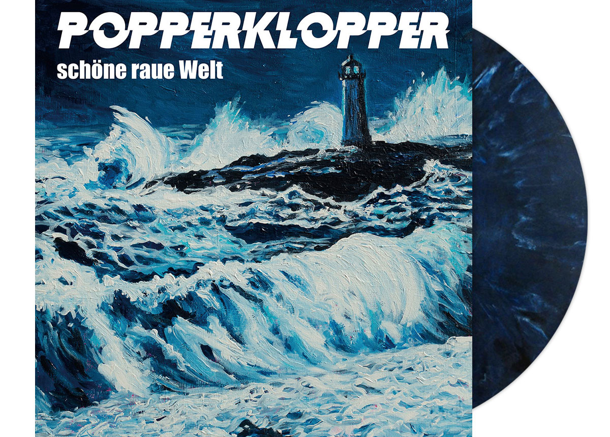

Review
POPPERKLOPPER - Halbmast

Manche Bands wohnen nicht einfach im Plattenregal. Die belagern das Ding. Seit Jahrzehnten. POPPERKLOPPER gehören bei mir genau in diese Abteilung. Die stehen da nicht rum, die gucken einen an. Und wenn dann eine neue Nummer kommt, denkt man kurz: Irgendwann müsste das doch mal langweilig werden.
Wird es aber nicht.
„Halbmast“ ist die Vorab-Single zum kommenden Album „Schöne raue Welt“, das am 11. September 2026 bei Aggressive Punk Produktionen, also AGGROPUNK, erscheinen soll. Und nach den ersten Sekunden ist eigentlich schon klar, wo die Reise hingeht: Intro, Gitarre, Carsten übertreibt es mal wieder mit seinen Gitarren-Skills, und man sitzt da mit diesem leicht genervt zufriedenen Gesichtsausdruck, weil man genau wusste, dass es so kommen würde.
Das Ding klingt immer noch nach POPPERKLOPPER. Nach früher. Nach heute. Nach einer Band, die nicht versucht, sich künstlich neu zu erfinden, nur damit irgendein Kulturmensch „spannende Weiterentwicklung“ in die Tastatur klöppeln kann. Es ist grob, es hat Druck, und ja, stellenweise ist das fast zu sauber für Punk. Aber eben nur fast. Der Dreck sitzt hier nicht unbedingt in jeder Ecke der Aufnahme, sondern in der Haltung.
Und genau da stimmt der Inhalt.
„Halbmast“ macht nicht auf große Pose, sondern geht dahin, wo POPPERKLOPPER seit jeher gut funktionieren: klare Kante, Wiedererkennung, genug Wucht, um nicht nur als Nostalgieübung durchzugehen. Das ist keine Band, die noch beweisen muss, dass sie Punk kann. Die macht einfach weiter. Und solange dabei solche Nummern rauskommen, dürfen die mein Plattenregal auch weiter belagern.
Fazit: POPPERKLOPPER klingen immer noch wie POPPERKLOPPER. Das könnte langweilig sein. Ist es aber nicht.